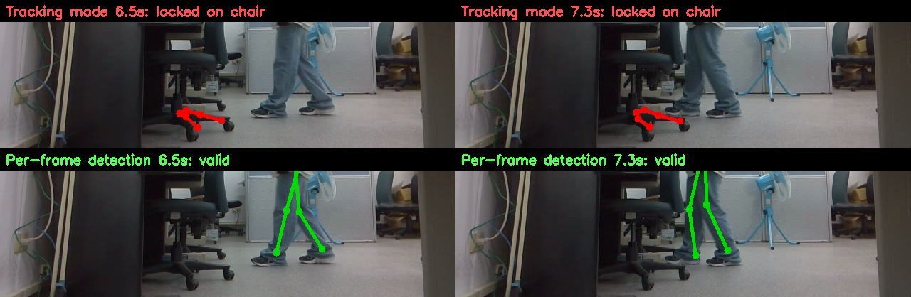
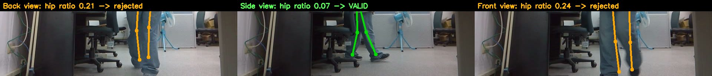

日期：2026 年 11 月 14 日
指導教授：朱學亭老師
目前階段：階段 3～5：改前基準、公式消融、尾隨偵測
進度摘要
本次以 11/12 錄製的 S0 資料，在 MacBook 建立完整的離線分析流程：影片轉骨架 → 改前基準評估 → 公式消融 → 尾隨判定。
轉骨架時發現 MediaPipe 追蹤模式會鎖死在椅子上，改為每幀重新偵測並加入「腿長」與「左右髖重疊比」條件，只保留側面全身的行走畫面。
以現有系統（26 維特徵＋cosine）量得改前基準後，導入公式 1 方向統一：自動判斷行走方向準確率 100%，往左走的大腿擺動角由 −0.035 翻正為 +0.035，方向造成的相似度差距縮小 59%。
同時完成尾隨偵測規則（授權者已驗證、跟隨者未驗證、通過時間差 ≤ T），9 個模擬情境全部正確，以 S0 實測 5 趟授權通行全部正確放行、無假警報。共 7 個 PR（#6～#12）皆已合併。
一、今日完成項目
| PR | 內容 | 用途 |
|---|
| #6 | .gitignore 排除 .venv/ | MacBook 離線 Python 環境不進版本控制 |
| #7 | extract_skeleton.py 影片轉骨架 | 30 FPS 影片逐幀抽骨架＋時間戳，標記可用幀 |
| #8 | evaluate.py 離線評估 | 以現有系統方法量「改前基準」 |
| #9 | gait_formulas.py 公式 1 方向統一 | 第一個消融實驗 |
| #10 | tailgate.py 尾隨偵測規則＋模擬測試 | 專題核心 |
| #11 | extract_multi.py 多人轉骨架 | 尾隨需同時抓兩人 |
| #12 | run_tailgate.py＋門線方向與側走條件 | 串起整條尾隨流程，以 S0 實測 |
Jetson 錄影 30 FPS→
轉骨架（單人／多人）→
正規化＋公式→
步態比對（身分）→
尾隨規則判定
離線流程用於「找出有效的公式並以數據證明」；驗證有效的公式之後搬回 Jetson 即時系統（兩邊共用同一份 pose.py 點位、同樣的 lite 模型與門檻）。
二、MacBook 離線環境
| 項目 | 說明 |
|---|
| 環境 | 專案內虛擬環境 .venv，Python 3.12、MediaPipe 0.10.21、OpenCV 4.11 |
| 版本選擇原因 | 最新版 MediaPipe 1.2.3 已移除舊式 mp.solutions.pose（現有 pose.py 使用的寫法）；0.10.21 與 Jetson 上的 0.10.9 寫法與 lite 模型相同，離線結果才能代表 Jetson 系統 |
三、影片轉骨架與可用幀判斷
每趟錄影的頭尾都有「走近鏡頭、只拍到腿」或正面、背面的畫面，只有側面、全身入鏡的幀能量步態。可用幀需同時符合：
| # | 條件 | 排除什麼 |
|---|
| 1 | 偵測到人 | 空畫面 |
| 2 | 髖、膝、踝平均可信度 ≥ 0.5（與 pose.py 相同） | 腿被遮住、看不清楚 |
| 3 | 髖、膝、踝 6 點都在畫面內 | 只拍到局部 |
| 4 | 腿長 ≥ 0.25 × 畫面高度 | 誤把椅腳當成人（假骨架只有 0.08～0.16） |
| 5 | 左右髖水平距離 ÷ 腿長 ≤ 0.15 | 正面／背面（側面時兩髖重疊 0.00～0.12；正背面 0.21～0.33） |
3.1 問題：追蹤模式鎖死在椅子上
MediaPipe 預設會「追蹤」上一幀找到的人。S0 第 6 趟一開始只拍到腿，模型誤抓椅腳後就一路追著椅子（可信度高達 0.97），真人走過也不換回來。改為每幀重新偵測後即可抓到真人。

▲ 上：追蹤模式，骨架（紅）卡在椅腳；下：每幀重新偵測，骨架（綠）正確落在受試者腿上（僅保留腰部以下畫面）
3.2 側面判斷：左右髖重疊比

▲ 同一趟中的背面、側面、正面：只有側面（重疊比 0.07）被判為可用；背面 0.21、正面 0.24 被排除
| S0（10 趟） | 修正前（追蹤＋只看可信度） | 修正後 |
|---|
| 可用幀比例 | 40～75%（含大量假骨架與正背面） | 17～31% |
| 每趟最長連續可用 | 3.1～8.7 秒 | 1.8～2.8 秒（約 1～2 個步態週期） |
結果：可用幀變少，是因為修正前混了大量假資料；修正後保留的都是真正可量步態的側面行走。
四、改前基準（現有系統）
evaluate.py 直接匯入 Jetson 上的 pose.py／main.py，不重寫，量到的就是現有系統的表現：
正規化座標 = (關節像素座標 − 左右髖中點) ÷ 平均腿長 → 26 維特徵 → cosine 相似度 ≥ 0.80
每連續 30 個可用幀（30 FPS 約 1 秒，約一個步態週期）為一個樣本，S0 共 33 個樣本（左走 17、右走 16）。
五、公式 1：方向統一
往右走時往前跨的腿 x 為正，往左走時變成負，同一個人只因方向不同，特徵就正負顛倒（已知問題 #6）。
5.1 公式
方向：髖中點像素 x 對時間的最小平方斜率 > 0 → 往右（LR）；< 0 → 往左（RL）
x′ = x（往右走） x′ = −x（往左走） y′ = y
方向由骨架自動判斷而非人工標籤，因此可直接搬回 Jetson 即時系統。程式模組：gait_formulas.py 的 walking_direction()、unify_direction()。
5.2 結果
▲ 大腿擺動角平均值（單位 π 弧度）：改前往左走（橘）為負值，方向統一後與往右走（藍）同號（滑鼠移到長條上可看數值）
| 指標（S0，33 樣本） | 改前基準 | ＋方向統一 |
|---|
| 方向自動判斷準確率 | － | 100%（33/33） |
| 擺動角：往左走（左／右大腿） | −0.035 ／ −0.036 | +0.035 ／ +0.036 |
| 不同方向 cosine 平均 | 0.9860 | 0.9896 |
| 同方向 cosine 平均 | 0.9918 | 0.9920 |
| 方向造成的差距 | 0.0058 | 0.0024（−59%） |
| 同一人比對分數 | 0.9943 | 0.9954 |
| FRR@0.80 | 0% | 0% |
發現：自動判斷與檔名標籤唯一不符的一段，是受試者在同一趟中折返的側走段，人工檢查影片確認自動判斷正確 —— 自動判斷比整趟標籤更能反映實際行走方向。
⚠️ cosine 不敏感：擺動角整個正負翻轉，cosine 只從 0.992 降到 0.986。26 維特徵多為正值且由膝角等大數值主導，不同人可能也高於 0.98（已知問題 #4），將以公式 2「z-score＋歐氏距離」改善，並以 11/16 多人資料驗證 FAR、EER。
六、尾隨偵測
6.1 判定規則（tailgate.py）
- 追蹤：每幀以髖中點 x 與上一幀最近的人配對，每人一個 ID，各自累積骨架（解決兩人骨架混在同一窗口的問題）。
- 通過門線：朝進門方向越過虛擬門線才算通過，且越線前至少 10 幀側面行走。
- 身分驗證：越線前累積 30 幀骨架即做步態比對（方向統一＋26 維特徵＋cosine）。
- 每人各自判定：取消原系統的全域 5 秒冷卻（授權者開門後 5 秒內其他人被直接略過）。
尾隨 ⇔ A 已驗證 ∧ B 未驗證 ∧ |tB − tA| ≤ T（T 暫定 3 秒）
使用絕對值，是因為並排通過時尾隨者可能比授權者稍早越線。
6.2 模擬測試：9/9 正確
| 情境 | 判定 |
|---|
| 授權者單獨通過 | AUTH_PASS |
| 陌生人緊跟 1 秒 | AUTH_PASS → TAILGATE（+1.00 s） |
| 陌生人隔 5 秒 | AUTH_PASS → UNVERIFIED_PASS（不是尾隨） |
| 並排，陌生人搶先 0.3 秒越線 | UNVERIFIED_PASS → AUTH_PASS → TAILGATE（−0.30 s） |
| 陌生人單獨通過 | UNVERIFIED_PASS（闖入） |
| 兩位授權者先後通過 | AUTH_PASS × 2 |
| 反方向穿越門線（走位） | 不算通過 |
| 加進門方向限制後陌生人緊跟 | AUTH_PASS → TAILGATE |
| 正面朝鏡頭走過門線（無側走幀） | 不算通過 |
6.3 多人姿態：與單人版一致
改用 MediaPipe 新式 PoseLandmarker（每幀最多 2 人），以 S0 驗證與單人版的一致性：
| 項目 | 結果 |
|---|
| 可用幀 | 單人版 897、多人版 893（差 0.4%） |
| 關節位置差 | 平均 0.75 像素（中位數 0.72） |
| 誤抓第 2 人 | 3,756 幀中 24 幀（0.6%），其中被判可用僅 2 幀，皆為單獨一幀，不會造成越線 |
6.4 S0 實測與修正
| 發現 | 原因 | 修正 |
|---|
| 往右走被判「未驗證通過」 | 畫面左側被桌子擋住，門線在畫面中間＝往右走的起點，來不及累積 30 幀 | 門線放在出口側，並只算進門方向 |
| 只有一人卻判為尾隨 | 通過後轉身走回鏡頭，追蹤中斷成新 ID，3 秒後再越線 | 越線前需 ≥ 10 幀側面行走 |
修正後結果（前 5 趟登錄、後 5 趟測試）：5 趟授權通行全部正確放行（cosine 0.981～0.996），假警報 0 次。門線放在出口側也符合實際門禁：鏡頭需拍到人走向門口的那一段，在到達門口前完成身分驗證。
七、11/16 錄影規劃
- 每位受試者單人 10 趟（左右各半），作為步態登錄與公式 2 的多人資料。
- 尾隨情境全部由左往右（門線在出口側）：A 單獨、A＋B 緊跟約 1 秒、A＋B 間隔約 5 秒、兩人並排。
- 從畫面外起步、由鏡頭後方繞到起點；通過後直接走出畫面，由旁人按 Enter。
- 鏡頭稍微後退或降低仰角，避免較高的受試者頭頂出畫面（頭部出畫面時 MediaPipe 偵測不到人）。
八、已知問題與限制
- 目前只有 1 位受試者：Rank-1、FAR、EER 需等 11/16 多人資料。
- 尾隨規則目前以模擬與單人資料驗證，兩人同框（特別是前後完全重疊）的效果待 11/16 驗證。
- cosine 不敏感：陌生人可能被誤認為授權者而導致尾隨漏判，需公式 2 改善。
- Jetson 即時系統仍使用追蹤模式，同樣可能鎖死在誤抓物體上，尚未修正。
九、後續規劃
- 11/15：公式 2「z-score 正規化＋歐氏距離」，取代 cosine，並讓尾隨流程可切換比對方式。
- 11/16：錄製其他受試者與尾隨情境，當天跑出尾隨判定結果，依實際資料決定時間窗 T。
- 11/17～11/18：補完消融表（Rank-1、FAR、FRR、EER）、簡報與預演。